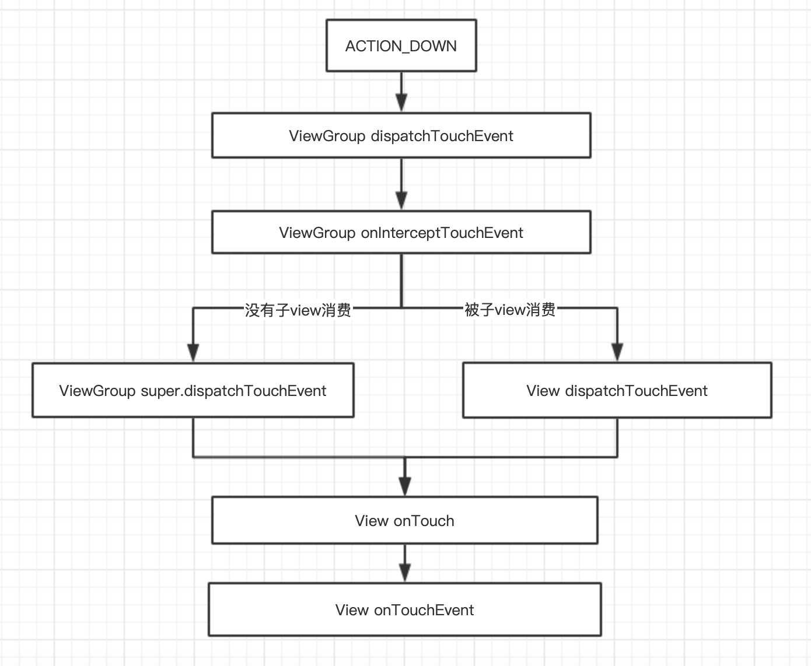

在 Android 中，事件分发机制是一块很重要的知识点，掌握这个机制能帮你在平时的开发中解决掉很多的 View 事件冲突问题，这个问题也是面试中问的比较多的一个问题了，今天就来总结下这个知识点。
事件分发机制
Android 中页面上的 View 是以树型结构显示的，View 会重叠在一起，当我们点击的地方有多个 View 可以响应的时候，这个点击事件应该给谁，为了解决这个问题就需要一个事件分发机制
Touch 事件，即将每一个 Touch 事件（MotionEvent）传递给 View，至于最终这个事件有没有处理看接收事件者的逻辑而定
当用户触摸屏幕的时候，就会产生 Touch 事件（Touch 事件被封装成 MotionEvent 对象），其主要分为如下几种
1.MotionEvent.ACTION_DOWN：使用手指点击屏幕这一瞬间，产生该事件，是所有事件的开始
2.MotionEvent.ACTION_MOVE：使用手指在屏幕滑动的时候产生该事件
3.MotionEvent.ACTION_CANCLE：非人为原因结束当前事件
4.MotionEvent.ACTION_UP：手指离开屏幕一瞬间产生该事件
一次完整的 Touch 事件，是从用户手指触摸屏幕（伴随着一次 ACTIONDOWN 事件）到用户手指离开屏幕（伴随着一次 ACTION UP 事件）这一过程，整个过程如下
ACTIONDOWN（一次） –> ACTION MOVE（N 次） –> ACTION_UP（一次）
事件分发方法
1.dispatchTouchEvent(MotionEvent ev) ：从方法名也能看出它的作用是对事件进行分发；当一个事件由底层驱动检测到了之后，会进行上报，最终会交由 Activity 的该方法处理，来决定是自己消费还是继续传递下去
2.onInterceptTouchEvent(MotionEvent ev) ：当一个事件分发到 ViewGroup 后，它可以决定是否对该事件进行拦截，该方法只有 ViewGroup 拥有
3.onTouchEvent(MotionEvent event) ：这是事件分发流程的最后一个方法了，即是否消费该次事件
事件分发参与者
1.Activity：包含 ViewGroup 和 View
2.ViewGroup：包含 ViewGroup 和 View
3.View：并不包含其它 View，只有自己
事件分发流向一般是 Activity –> ViewGroup –> …… –> View
注意：
1.子 View 可以通过 requestDisallowInterceptTouchEvent 方法干预父 View 的事件分发过程（ACTION_DOWN 事件除外），而这就是我们处理滑动冲突常用的关键方法
2.如果 View 设置了 onTouchListener，在重写的 onTouch 方法中返回 true，那么它的 onTouchEvent 方法不会被调用，因为在 View 的 dispatchTouchEvent 中 onTouch 优先于 onTouchEvent 执行；onClick 方法也不会被调用，因为 onClick 是在 onTouchEvent 中回调的
事件分发流程
当手指触摸屏幕后，底层 Input 驱动从/dev/input/路径下读写以 event[NUMBER]为名的硬件输入设备节点获取事件（可以通过 adb shell getevent 查看你的设备下的节点，Android 也是从这些节点获取这些原始数据再封装后提供给开发者使用；如果做游戏开发可能就直接获取这些原始数据自己处理了），经过一系列调用后传递到了 DecorView 的 dispatchTouchEvent 方法
在 DecorView 中，会通过 Window 的内部接口 Callback，将事件继续传递，因为 Activity 实现了该接口，故事件分发到 Activity；Activity 获取到事件后，在 dispatchTouchEvent 方法中先将事件分发到该 Activity 所在的 window，实际类型是 PhoneWindow，这个 window 又将事件交给它的顶级 view 即 DecorView 处理
DecorView 是 FrameLayout 的子类，即 ViewGroup 的子类，自己没有处理，只是继续将事件交由 ViewGroup 处理；就这样一个事件就从 Activity 转到了 ViewGroup
ViewGroup 在 dispatchTouchEvent 方法进行分发，如果自己的 onInterceptTouchEvent 方法拦截此次事件，就把事件交给自身的 onTouchEvent 方法处理；反之遍历自己的子 View，继续将事件分发下去，只要有一个子 View 消费了这个事件，那就停止遍历
事件会传递到子 View 的 dispatchTouchEvent 方法，如果给子 View 注册了 OnTouchListener，且返回 true，那事件分发就到此结束；反之就会继续将事件传递到子 View 的 onTouchEvent 方法
子 View 会在 ACTION_UP 事件中回调 View 的 onClick 监听，如果子 View 没有消费此次事件，就会按照分发流程反过来传递回去到 Activity；如果到了 Activity 还没人消费（包括 Activity 自己），那就会销毁这个事件
流程图 
事件分发源码 当有点击事件，经过一系列传递，会进入到
Activity.dispatchTouchEvent 1 2 3 4 5 6 7 8 9 10 11 12 public boolean dispatchTouchEvent(MotionEvent ev) { //1.down事件会进行判断，onUserInteraction是一个空方法，开发者可以自行处理 if (ev.getAction() == MotionEvent.ACTION_DOWN) { onUserInteraction(); } //2.下层view如果消费了事件了，返回true if (getWindow().superDispatchTouchEvent(ev)) { return true; } //3.时间Activity自己进行处理 return onTouchEvent(ev); }
这个方法就是 Activity 用来处理触摸屏事件，我们可以重写这个方法，并返回 true/false，这样在事件分发到 window 前就能进行拦截，Activity 内的 ViewGroup 或者 View 将收不到事件。
getWindow().superDispatchTouchEvent(ev)
getWindow返回的是Window的子类PhoneWindow对象，
PhoneWindow.superDispatchTouchEvent 1 2 3 4 5 6 //这是窗口的顶层视图 private DecorView mDecor @Override public boolean superDispatchTouchEvent(MotionEvent event) { return mDecor.superDispatchTouchEvent(event); }
DecorView .superDispatchTouchEvent
1 2 3 public boolean superDispatchTouchEvent(MotionEvent event) { return super.dispatchTouchEvent(event); }
DecorView 是 FrameLayout 的子类，FrameLayout 又是 ViewGroup 的子类，这里就会走到 ViewGroup
ViewGroup.dispatchTouchEvent 1 2 3 4 5 6 7 8 9 10 11 12 13 14 15 16 17 18 19 20 21 22 23 24 25 26 27 28 29 30 31 32 33 34 35 36 37 38 39 40 41 42 43 44 45 46 47 48 49 50 51 52 53 54 55 56 57 58 59 60 61 62 63 64 65 66 67 68 69 70 71 72 73 74 75 76 77 78 79 80 81 82 83 84 85 86 87 88 89 90 91 92 93 94 95 96 97 98 99 100 101 102 103 104 105 106 107 108 109 110 111 112 113 114 115 116 117 118 119 120 121 122 123 124 125 126 127 128 129 130 131 132 133 134 135 136 137 138 139 140 141 142 143 144 145 146 147 148 149 150 151 152 153 154 155 156 157 158 159 160 161 162 163 164 165 166 167 168 169 170 171 172 173 174 175 176 177 178 179 180 181 182 183 184 185 186 187 188 189 190 191 192 193 194 195 196 197 198 199 200 201 202 203 204 205 206 207 208 209 210 211 212 213 214 215 216 217 218 219 220 221 222 223 224 225 226 @Override public boolean dispatchTouchEvent(MotionEvent ev) { ... //这个变量用于标记事件是否被消费 boolean handled = false; //根据应用安全策略过滤触摸事件 if (onFilterTouchEventForSecurity(ev)) { final int action = ev.getAction(); final int actionMasked = action & MotionEvent.ACTION_MASK; // 1.处理 initial down 发生后的初始化操作 if (actionMasked == MotionEvent.ACTION_DOWN) { // 新的 ACTION_DOWN 事件来了，需要取消并清除之前的 touch Targets //清空掉 mFirstTouchTarget cancelAndClearTouchTargets(ev); //重置触摸状态 resetTouchState(); } //标记是否拦截事件 final boolean intercepted; // 2.当 ACTION_DOWN 来了或者已经发生过 ACTION_DOWN,并且将 mFirstTouchTarget 赋值 //就检测 ViewGroup 是否需要拦截事件.可以关注下mFirstTouchTarget在哪里赋值的 //只有发生过 ACTION_DOWN 事件，mFirstTouchTarget != null if (actionMasked == MotionEvent.ACTION_DOWN || mFirstTouchTarget != null) { //子 View 可以通过调用父 View 的 requestDisallowInterceptTouchEvent 方法设置 mGroupFlags 值 //以此告诉父 View 是否拦截事件 final boolean disallowIntercept = (mGroupFlags & FLAG_DISALLOW_INTERCEPT) != 0; //如果子 view 没有告诉父 View 别拦截事件，那父 View 就判断自己是否需要拦截事件 if (!disallowIntercept) { intercepted = onInterceptTouchEvent(ev); ev.setAction(action); // 重新恢复 action 以防被改变了 } else { //这里表明子 View 告诉父 View 不要拦截事件 intercepted = false; } } else { //当 mFirstTouchTarget=null（没有子 View 被分配处理）， //且不是 initial down 事件时（事件已经初始化过了），ViewGroup 继续拦截触摸 //继续设置为 true intercepted = true; } // 如果当前事件是 ACTION_CANCEL，或者 view.mPrivateFlags 被设置了 PFLAG_CANCEL_NEXT_UP_EVENT //那么当前事件就取消了 final boolean canceled = resetCancelNextUpFlag(this) || actionMasked == MotionEvent.ACTION_CANCEL; //split 表示当前的 ViewGroup 是不是支持分割 MotionEvent 到不同的 View 当中 final boolean split = (mGroupFlags & FLAG_SPLIT_MOTION_EVENTS) != 0; //新的 TouchTarget TouchTarget newTouchTarget = null; //是否把事件分发给了新的 TouchTarget boolean alreadyDispatchedToNewTouchTarget = false; //3.不取消事件，同时不拦截事件才进入该区域 if (!canceled && !intercepted) { //把事件分发给所有的子视图，寻找可以获取焦点的视图 View childWithAccessibilityFocus = ev.isTargetAccessibilityFocus() ? findChildWithAccessibilityFocus() : null; //如果是这三种事件就得遍历子 View if (actionMasked == MotionEvent.ACTION_DOWN || (split && actionMasked == MotionEvent.ACTION_POINTER_DOWN) || actionMasked == MotionEvent.ACTION_HOVER_MOVE) { final int actionIndex = ev.getActionIndex(); // always 0 for down final int idBitsToAssign = split ? 1 << ev.getPointerId(actionIndex) : TouchTarget.ALL_POINTER_IDS; // 对于这个 PointerId 清空更早的 touch targets removePointersFromTouchTargets(idBitsToAssign); final int childrenCount = mChildrenCount; //如果当前 ViewGroup 有子 View 且 newTouchTarget=null if (newTouchTarget == null && childrenCount != 0) { final float x = ev.getX(actionIndex); final float y = ev.getY(actionIndex); // 在视图里从前到后扫描一遍获取可以接收事件的子 View final ArrayList<View> preorderedList = buildTouchDispatchChildList(); final boolean customOrder = preorderedList == null && isChildrenDrawingOrderEnabled(); final View[] children = mChildren; //遍历所有子 View，找到一个来接收事件 for (int i = childrenCount - 1; i >= 0; i--) { final int childIndex = getAndVerifyPreorderedIndex( childrenCount, i, customOrder); final View child = getAndVerifyPreorderedView( preorderedList, children, childIndex); //如果当前子 View 没有获取焦点，则跳过这个子 View if (childWithAccessibilityFocus != null) { if (childWithAccessibilityFocus != child) { continue; } childWithAccessibilityFocus = null; i = childrenCount - 1; } //如果当前子 View 不可见且没有播放动画 或者 不在触摸点范围内，跳过这个子 View if (!canViewReceivePointerEvents(child) || !isTransformedTouchPointInView(x, y, child, null)) { ev.setTargetAccessibilityFocus(false); continue; } //如果在触摸目标列表找到了与该子 View 对应的 TouchTarget， //说明这个 view 正在接收事件，不需要再遍历，直接退出 newTouchTarget = getTouchTarget(child); if (newTouchTarget != null) { newTouchTarget.pointerIdBits |= idBitsToAssign; break; } resetCancelNextUpFlag(child); //子 view 处于触摸位置，就将事件分发给子 View，如果该子 View 返回 true， //说明消费了这个事件，就跳出遍历 if (dispatchTransformedTouchEvent(ev, false, child, idBitsToAssign)) { // 获取 TouchDown 的时间点 mLastTouchDownTime = ev.getDownTime(); // 获取 TouchDown 的 Index if (preorderedList != null) { // childIndex points into presorted list, find original index for (int j = 0; j < childrenCount; j++) { if (children[childIndex] == mChildren[j]) { mLastTouchDownIndex = j; break; } } } else { mLastTouchDownIndex = childIndex; } //获取 TouchDown 的 x,y 坐标 mLastTouchDownX = ev.getX(); mLastTouchDownY = ev.getY(); //添加到触摸目标列表 同时给 mFirstTouchTarget 赋值 newTouchTarget = addTouchTarget(child, idBitsToAssign); alreadyDispatchedToNewTouchTarget = true; break; } // The accessibility focus didn't handle the event, so clear // the flag and do a normal dispatch to all children. ev.setTargetAccessibilityFocus(false); } if (preorderedList != null) preorderedList.clear(); } if (newTouchTarget == null && mFirstTouchTarget != null) { // 到这里说明没有子 View 接收事件，那就把最近一次的触摸目标赋值给 newTouchTarget newTouchTarget = mFirstTouchTarget; while (newTouchTarget.next != null) { newTouchTarget = newTouchTarget.next; } newTouchTarget.pointerIdBits |= idBitsToAssign; } } } // 4.mFirstTouchTarget 赋值是在通过 addTouchTarget 方法获取的； // 只有处理 ACTION_DOWN 事件，才会进入 addTouchTarget 方法。 // 这也正是当 View 没有消费 ACTION_DOWN 事件，则不会接收其他 MOVE,UP 等事件的原因 if (mFirstTouchTarget == null) { // 那就只能 ViewGroup 自己处理事件了 handled = dispatchTransformedTouchEvent(ev, canceled, null, TouchTarget.ALL_POINTER_IDS); } else { // 到这里就说明有子 View 接收了 ACTION_DOWN 事件，那后续的 move up 等事件就继续分发给这个触摸目标 TouchTarget predecessor = null; TouchTarget target = mFirstTouchTarget; while (target != null) { final TouchTarget next = target.next; if (alreadyDispatchedToNewTouchTarget && target == newTouchTarget) { handled = true; } else { //如果 view.mPrivateFlags 被设置了 PFLAG_CANCEL_NEXT_UP_EVENT 或者事件被 ViewGroup 拦截了 //那子 View 需要取消事件 final boolean cancelChild = resetCancelNextUpFlag(target.child) || intercepted; //继续分发事件给子 View if (dispatchTransformedTouchEvent(ev, cancelChild, target.child, target.pointerIdBits)) { handled = true; } if (cancelChild) { if (predecessor == null) { mFirstTouchTarget = next; } else { predecessor.next = next; } target.recycle(); target = next; continue; } } predecessor = target; target = next; } } //当发生抬起或取消事件，更新触摸目标列表 if (canceled || actionMasked == MotionEvent.ACTION_UP || actionMasked == MotionEvent.ACTION_HOVER_MOVE) { resetTouchState(); } else if (split && actionMasked == MotionEvent.ACTION_POINTER_UP) { //如果是多点触摸下的手指抬起事件，就要根据 idBit 从 TouchTarget 中移除掉对应的 Pointer(触摸点) final int actionIndex = ev.getActionIndex(); final int idBitsToRemove = 1 << ev.getPointerId(actionIndex); removePointersFromTouchTargets(idBitsToRemove); } } if (!handled && mInputEventConsistencyVerifier != null) { mInputEventConsistencyVerifier.onUnhandledEvent(ev, 1); } return handled; }
事件初始化 1 2 3 4 5 6 7 8 // 处理 initial down 发生后的初始化操作 if (actionMasked == MotionEvent.ACTION_DOWN) { // 新的 ACTION_DOWN 事件来了，需要取消并清除之前的 touch Targets //清空掉 mFirstTouchTarget cancelAndClearTouchTargets(ev); //重置触摸状态 resetTouchState(); }
拦截判断 1 2 3 4 5 6 7 8 9 10 11 12 13 14 15 16 17 18 19 20 21 22 23 //标记是否拦截事件 final boolean intercepted; // 当 ACTION_DOWN 来了或者已经发生过 ACTION_DOWN,并且将 mFirstTouchTarget 赋值 就检测 ViewGroup 是否需要拦截事件. if (actionMasked == MotionEvent.ACTION_DOWN || mFirstTouchTarget != null) { //子 View 可以通过调用父 View 的 requestDisallowInterceptTouchEvent 方法设置 mGroupFlags 值 //以此告诉父 View 是否拦截事件 final boolean disallowIntercept = (mGroupFlags & FLAG_DISALLOW_INTERCEPT) != 0; //如果子 view 没有告诉父 View 别拦截事件，那父 View 就判断自己是否需要拦截事件 if (!disallowIntercept) { intercepted = onInterceptTouchEvent(ev); ev.setAction(action); // 重新恢复 action 以防被改变了 } else { //这里表明子 View 告诉父 View 不要拦截事件 intercepted = false; } } else { //当 mFirstTouchTarget=null（没有子 View 被分配处理），且不是 initial down 事件时（事件已经初始化过了），ViewGroup 继续拦截触摸 //继续设置为 true intercepted = true; }
当事件是 ACTIONDOWN 或者 mFirstTouchTarget != null 才会去判断要不要拦截，由第一步可知，当事件是 ACTION DOWN 的时候，mFirstTouchTarget 肯定为 null，所以这里只有两种情况会进入：ACTIONDOWN 事件来了需要判断拦截；ACTION DOWN 事件中如果有子 View 接收了事件（这样 mFirstTouchTarget 就赋值了），那接下来的事件也需要判断是否拦截事件
上面条件的反向逻辑就是事件是 ACTIONDOWN 事件以后的事件（比如 move 或者 up）且 mFirstTouchTarget 为 null，说明在 ACTION DOWN 事件中就判断了需要拦截事件或者没有子 View 处理事件，那接下来的事件就没必要分发了，继续拦截
requestDisallowInterceptTouchEvent ,子view可以调用此方法来控制父view是否进行拦截。
ViewGroup.requestDisallowInterceptTouchEvent 1 2 3 4 5 6 7 8 9 10 11 12 13 14 15 16 17 18 19 @Override public void requestDisallowInterceptTouchEvent(boolean disallowIntercept) { if (disallowIntercept == ((mGroupFlags & FLAG_DISALLOW_INTERCEPT) != 0)) { // 如果已经设置过了，就返回 return; } if (disallowIntercept) { mGroupFlags |= FLAG_DISALLOW_INTERCEPT; } else { mGroupFlags &= ~FLAG_DISALLOW_INTERCEPT; } // 依次告诉父 view if (mParent != null) { mParent.requestDisallowInterceptTouchEvent(disallowIntercept); } }
ViewGroup.onInterceptTouchEvent 1 2 3 4 5 6 7 8 9 10 11 12 13 14 15 16 17 18 /** * ViewGroup 可在这个方法里拦截所有触摸事件，默认是不拦截事件，开发者可以重写这个方法决定是否要拦截 * 如下四个条件都成立，返回 true，拦截事件 * 第一个：触摸事件是否来自鼠标指针设备 * 第二个：触摸事件是否是 ACTION_DOWN * 第三个：检查是否按下了鼠标或手写笔按钮（或按钮组合），也就是说用户必须实际按下 * 第四个：触摸点是否在滚动条上 */ public boolean onInterceptTouchEvent(MotionEvent ev) { if (ev.isFromSource(InputDevice.SOURCE_MOUSE) && ev.getAction() == MotionEvent.ACTION_DOWN && ev.isButtonPressed(MotionEvent.BUTTON_PRIMARY) && isOnScrollbarThumb(ev.getX(), ev.getY())) { return true; } return false; }
ACTION_DOWN 事件分发
接下来就需要遍历子 View，然后将 ACTION_DOWN 事件分发给能接收事件的子 View
如果当前子 View 没有获取焦点，则跳过这个子 View
如果当前子 View 不可见且没有播放动画 或者 不在触摸点范围内，跳过这个子 View
如果在触摸目标列表找到了与该子 View 对应的 TouchTarget，说明这个 view 正在接收事件，不需要再遍历，直接退出
如果子 view 处于触摸位置，就调用 dispatchTransformedTouchEvent 方法将事件分发给子 View，如果该方法返回 true，说明子 View 消费了这个事件，那就不需要再寻找子 view 接收事件了，跳出遍历
1 2 3 4 5 6 7 8 9 10 11 12 13 14 15 16 17 18 19 20 21 22 23 24 25 26 27 28 29 30 31 32 33 34 35 36 37 38 39 40 41 42 43 44 45 46 47 48 49 50 51 52 53 54 55 56 57 58 59 60 61 62 63 64 65 66 67 68 69 70 71 72 73 74 75 76 77 private boolean dispatchTransformedTouchEvent(MotionEvent event, boolean cancel, View child, int desiredPointerIdBits) { final boolean handled; // 发生取消操作时，不再执行后续的任何操作 final int oldAction = event.getAction(); if (cancel || oldAction == MotionEvent.ACTION_CANCEL) { event.setAction(MotionEvent.ACTION_CANCEL); //没有子view，只可能是ViewGroup没有子View或者本身就是View if (child == null) { //super表明这个dispatchTouchEvent是View的方法 handled = super.dispatchTouchEvent(event); } else { //这个dispatchTouchEvent既可能是ViewGroup也可能是View的 handled = child.dispatchTouchEvent(event); } event.setAction(oldAction); return handled; } final int oldPointerIdBits = event.getPointerIdBits(); final int newPointerIdBits = oldPointerIdBits & desiredPointerIdBits; //由于某些原因，发生不一致的操作，那么将抛弃该事件 if (newPointerIdBits == 0) { return false; } //分发的主要区域 final MotionEvent transformedEvent; //判断预期的 pointer id 与事件的 pointer id 是否相等 if (newPointerIdBits == oldPointerIdBits) { if (child == null || child.hasIdentityMatrix()) { if (child == null) { //不存在子视图时，ViewGroup 调用 View.dispatchTouchEvent 分发事件， //再调用 ViewGroup.onTouchEvent 来处理事件 handled = super.dispatchTouchEvent(event); } else { final float offsetX = mScrollX - child.mLeft; final float offsetY = mScrollY - child.mTop; event.offsetLocation(offsetX, offsetY); //将触摸事件分发给子 ViewGroup 或 View; handled = child.dispatchTouchEvent(event); event.offsetLocation(-offsetX, -offsetY); //调整该事件的位置 } return handled; } transformedEvent = MotionEvent.obtain(event); //拷贝该事件，来创建一个新的 MotionEvent } else { //分离事件，获取包含 newPointerIdBits 的 MotionEvent transformedEvent = event.split(newPointerIdBits); } if (child == null) { //不存在子视图时，ViewGroup 调用 View.dispatchTouchEvent 分发事件， //再调用 ViewGroup.onTouchEvent 来处理事件 handled = super.dispatchTouchEvent(transformedEvent); } else { final float offsetX = mScrollX - child.mLeft; final float offsetY = mScrollY - child.mTop; transformedEvent.offsetLocation(offsetX, offsetY); if (! child.hasIdentityMatrix()) { //将该视图的矩阵进行转换 transformedEvent.transform(child.getInverseMatrix()); } //将触摸事件分发给子 ViewGroup 或 View; handled = child.dispatchTouchEvent(transformedEvent); } //回收 transformedEvent transformedEvent.recycle(); return handled; }
该方法是 ViewGroup 真正处理事件的地方，分发子 View 来消费事件，过滤掉不相干的 pointer ids。当子视图为 null 时，MotionEvent 将会发送给该 ViewGroup；不为 null，最终调用 View.dispatchTouchEvent 方法来分发事件。
View.dispatchTouchEvent 1 2 3 4 5 6 7 8 9 10 11 12 13 14 15 16 17 18 19 20 21 22 23 24 25 26 27 28 29 30 31 32 33 34 35 36 37 38 39 40 41 42 43 44 45 46 47 48 49 50 51 /** * 将触摸事件向下传递到目标视图，或者这个 View 是目标视图。 * * @return 返回 true 表示消费了事件，反之返回 false */ public boolean dispatchTouchEvent(MotionEvent event) { ...... boolean result = false; final int actionMasked = event.getActionMasked(); if (actionMasked == MotionEvent.ACTION_DOWN) { //在 Down 事件之前，如果存在滚动操作则停止。不存在则不进行操作 stopNestedScroll(); } //过滤触摸事件以应用安全策略 if (onFilterTouchEventForSecurity(event)) { if ((mViewFlags & ENABLED_MASK) == ENABLED && handleScrollBarDragging(event)) { result = true; } ListenerInfo li = mListenerInfo; // 如果给 View 设置了 OnTouchListener //且该 view 没有禁用的 //且 OnTouchListener.onTouch 返回 true //那说明该 View 消费了该事件，返回 true if (li != null && li.mOnTouchListener != null && (mViewFlags & ENABLED_MASK) == ENABLED && li.mOnTouchListener.onTouch(this, event)) { result = true; } //如果 OnTouchListener.onTouch 没有消费事件且 View 的 onTouchEvent 方法返回 true，那返回 true if (!result && onTouchEvent(event)) { result = true; } } // 如果这是手势的结束，则在嵌套滚动后清理; //如果我们尝试了 ACTION_DOWN 但是我们不想要其余的手势，也要取消它。 if (actionMasked == MotionEvent.ACTION_UP || actionMasked == MotionEvent.ACTION_CANCEL || (actionMasked == MotionEvent.ACTION_DOWN && !result)) { stopNestedScroll(); } return result; }
这里有两点比较重要
如果开发者设置 OnTouchListener 监听，且在 onTouch 方法返回 true，说明 view 消费了事件
如果没有设置监听，那就调用 View 的 onTouchEvent 方法去处理事件
可以看出 OnTouchListener.onTouch 是优先于 onTouchEvent 执行的，只要前者返回 true，那后者就不会执行了，事件到此为止结束
View.onTouchEvent 1 2 3 4 5 6 7 8 9 10 11 12 13 14 15 16 17 18 19 20 21 22 23 24 25 26 27 28 29 30 31 32 33 34 35 36 37 38 39 40 41 42 43 44 45 46 47 48 49 50 51 52 53 54 55 56 57 58 59 60 61 62 63 64 65 66 67 68 69 70 71 72 73 74 75 76 77 78 79 80 81 82 83 84 85 86 87 88 89 90 91 92 93 94 95 96 97 98 99 100 101 102 103 104 105 106 107 108 109 110 111 112 113 114 115 116 117 118 119 120 121 122 123 124 125 126 127 128 129 130 131 132 133 134 135 public boolean onTouchEvent(MotionEvent event) { final float x = event.getX(); final float y = event.getY(); final int viewFlags = mViewFlags; final int action = event.getAction(); //如果这个 view 是禁用的，可以通过 setEnabled()设置是否禁用 if ((viewFlags & ENABLED_MASK) == DISABLED) { if (action == MotionEvent.ACTION_UP && (mPrivateFlags & PFLAG_PRESSED) != 0) { setPressed(false); } // 即使设置了禁用，但是只要这个 view 满足 CLICKABLE ，LONG_CLICKABLE ，CONTEXT_CLICKABLE 其中一种 //任然算消费该事件，只是没有响应而已 return (((viewFlags & CLICKABLE) == CLICKABLE || (viewFlags & LONG_CLICKABLE) == LONG_CLICKABLE) || (viewFlags & CONTEXT_CLICKABLE) == CONTEXT_CLICKABLE); } //当 View 状态为 ENABLED //且这个 view 满足 CLICKABLE LONG_CLICKABLE CONTEXT_CLICKABLE 其中一种，就消费这个事件 if (((viewFlags & CLICKABLE) == CLICKABLE || (viewFlags & LONG_CLICKABLE) == LONG_CLICKABLE) || (viewFlags & CONTEXT_CLICKABLE) == CONTEXT_CLICKABLE) { switch (action) { case MotionEvent.ACTION_UP: boolean prepressed = (mPrivateFlags & PFLAG_PREPRESSED) != 0; if ((mPrivateFlags & PFLAG_PRESSED) != 0 || prepressed) { // 获取焦点处于可触摸模式 boolean focusTaken = false; if (isFocusable() && isFocusableInTouchMode() && !isFocused()) { focusTaken = requestFocus(); } if (prepressed) { // The button is being released before we actually // showed it as pressed. Make it show the pressed // state now (before scheduling the click) to ensure // the user sees it. setPressed(true, x, y); } if (!mHasPerformedLongPress && !mIgnoreNextUpEvent) { //这是 Tap 操作，移除长按回调方法 removeLongPressCallback(); // 如果处于按下状态尽执行点击操作 if (!focusTaken) { // 使用 Runnable 并发布而不是直接调用 performClick //这样可以在单击操作开始之前更新视图的其他可视状态 if (mPerformClick == null) { mPerformClick = new PerformClick(); } //调用 View.OnClickListener if (!post(mPerformClick)) { performClick(); } } } if (mUnsetPressedState == null) { mUnsetPressedState = new UnsetPressedState(); } if (prepressed) { postDelayed(mUnsetPressedState, ViewConfiguration.getPressedStateDuration()); } else if (!post(mUnsetPressedState)) { // If the post failed, unpress right now mUnsetPressedState.run(); } removeTapCallback(); } mIgnoreNextUpEvent = false; break; case MotionEvent.ACTION_DOWN: mHasPerformedLongPress = false; if (performButtonActionOnTouchDown(event)) { break; } // 确定是否处于可滚动的视图内 boolean isInScrollingContainer = isInScrollingContainer(); if (isInScrollingContainer) { mPrivateFlags |= PFLAG_PREPRESSED; if (mPendingCheckForTap == null) { mPendingCheckForTap = new CheckForTap(); } mPendingCheckForTap.x = event.getX(); mPendingCheckForTap.y = event.getY(); //当处于可滚动视图内，则延迟 TAP_TIMEOUT，再反馈按压状态，用来判断用户是否想要滚动。默认延时为 100ms postDelayed(mPendingCheckForTap, ViewConfiguration.getTapTimeout()); } else { //当不再滚动视图内，则立刻反馈按压状态 setPressed(true, x, y); //检测是否是长按，如果长按，回调 OnLongClickListener.onLongClick checkForLongClick(0, x, y); } break; case MotionEvent.ACTION_CANCEL: setPressed(false); removeTapCallback(); removeLongPressCallback(); mInContextButtonPress = false; mHasPerformedLongPress = false; mIgnoreNextUpEvent = false; break; case MotionEvent.ACTION_MOVE: drawableHotspotChanged(x, y); // Be lenient about moving outside of buttons if (!pointInView(x, y, mTouchSlop)) { // Outside button removeTapCallback(); if ((mPrivateFlags & PFLAG_PRESSED) != 0) { // Remove any future long press/tap checks removeLongPressCallback(); setPressed(false); } } break; } return true; } return false; }
这里有几点需要注意
只要是这个 view 满足 CLICKABLE ，LONGCLICKABLE ，CONTEXT CLICKABLE 其中一种，不管通过 setEnabled()设置禁用还是可用，都会返回 true，认为消费事件
View 的 longClickable 默认为 false，clickable 需要区分情况，如 Button 的 clickable 默认为 true，而 TextView 的 clickable 默认为 false；但是 View 的 setOnClickListener 会默认将 View 的 clickable 设置成 true，View 的 setOnLongClickListener 同样会将 View 的 longClickable 设置成 true
在 ACTION_DOWN 操作中，如果是长按，回调 OnLongClickListener.onLongClick
在 ACTION_UP 操作中，回调 OnClickListener.onClick
这个方法调用完毕，回到 ViewGroup.dispatchTouchEvent 会调用 addTouchTarget 方法
ViewGroup.addTouchTarget 1 2 3 4 5 6 private TouchTarget addTouchTarget(View child, int pointerIdBits) { TouchTarget target = TouchTarget.obtain(child, pointerIdBits); target.next = mFirstTouchTarget; mFirstTouchTarget = target; return target; }
可以看到在这里给 mFirstTouchTarget 赋值了
当子控件消费了事件，mFirstTouchTarget 不为空；当子控件没有消费事件或者被拦截，mFirstTouchTarget 为空
ACTIONMOVE ACTION UP 事件分发
如果ACTION_DOWN没有子View,childrenCount=0，也就是自己消费，mFirstTouchTarget==null,调用dispatchTransformedTouchEvent，child=null，
否则，调用dispatchTransformedTouchEvent，child=target.child，意味着事件传递到了目标child
Activity.OnTouchEvent 所有流程走完，假如没有一个 View 消费事件，那最终会回到 Activity.OnTouchEvent
1 2 3 4 5 6 7 8 9 10 11 12 13 14 15 16 17 18 19 public boolean dispatchTouchEvent(MotionEvent ev) { if (ev.getAction() == MotionEvent.ACTION_DOWN) { onUserInteraction(); } //循环判断是否有 ViewGroup 或者 View 消费事件，如果没有，事件回到 activity if (getWindow().superDispatchTouchEvent(ev)) { return true; } return onTouchEvent(ev); } public boolean onTouchEvent(MotionEvent event) { if (mWindow.shouldCloseOnTouch(this, event)) { finish(); return true; } return false; }
注意点
触摸事件由 Activity.dispatchTouchEvent 先处理；再一层层往下分发，当中间的 ViewGroup 都不消费或者拦截时，进入最底层的 View，开始由最底层的 OnTouchEvent 来处理，如果一直不消费，则最后返回到 Activity.OnTouchEvent
只有 ViewGroup 有 onInterceptTouchEvent 拦截方法；在分发过程中，中间任何一层 ViewGroup 都可以直接拦截，则不再往下分发，而是交由发生拦截操作的 ViewGroup 的 OnTouchEvent 来处理
子 View 可调用父 ViewGroup 的 requestDisallowInterceptTouchEvent 方法，来设置 disallowIntercept=true，从而阻止父 ViewGroup 的 onInterceptTouchEvent 拦截操作
OnTouchEvent 由下往上冒泡时，当中间任何一层的 OnTouchEvent 消费该事件，则不再往上传递，表示事件已消费
如果 dispatchTouchEvent 在进行事件分发的时候，View 没有消费 ACTIONDOWN 事件，即返回 true，则之后的 ACTION MOVE 等事件都将无法接收
不管 View 是 DISABLED（禁用）的还是 ENABLED（可用）的，只要是 CLICKABLE （可点击），LONG_CLICKABLE（可长按） ，都会消费事件
View 的 setOnClickListener 会默认将 View 的 clickable 设置成 true，View 的 setOnLongClickListener 同样会将 View 的 longClickable 设置成 true；所有 View 的 setClickable 和 setLongClickable 最好在两个监听方法后调用
onTouch 优先于 onTouchEvent 执行，onClick 和 onLongClick 在 onTouchEvent 中被调用，且 onLongClick 优先于 onClick 被执行；如果 onTouch 返回 true，就不会执行 onTouchEvent；onTouch 只有 View 设置了 OnTouchListener，且是 enable 的才执行该方法